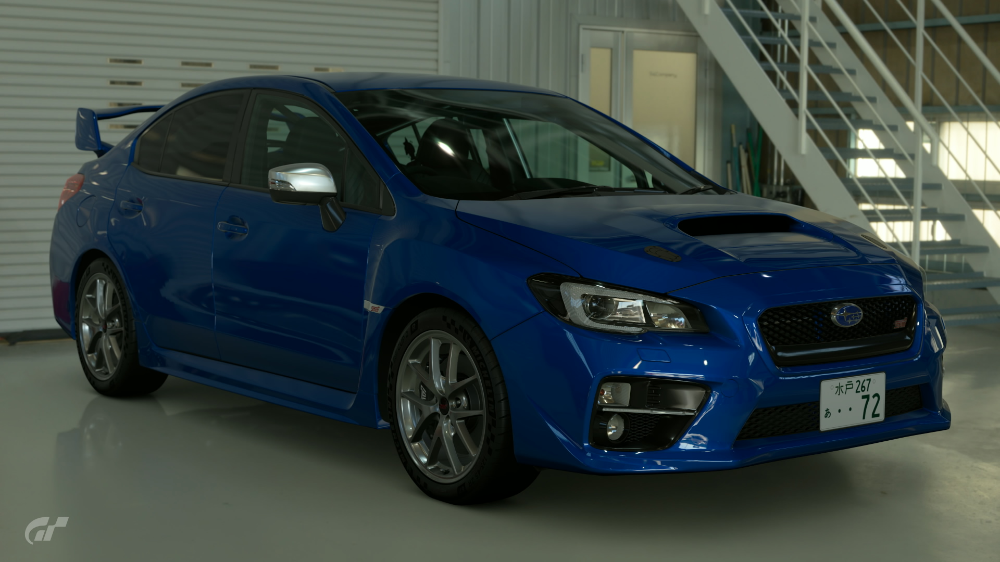
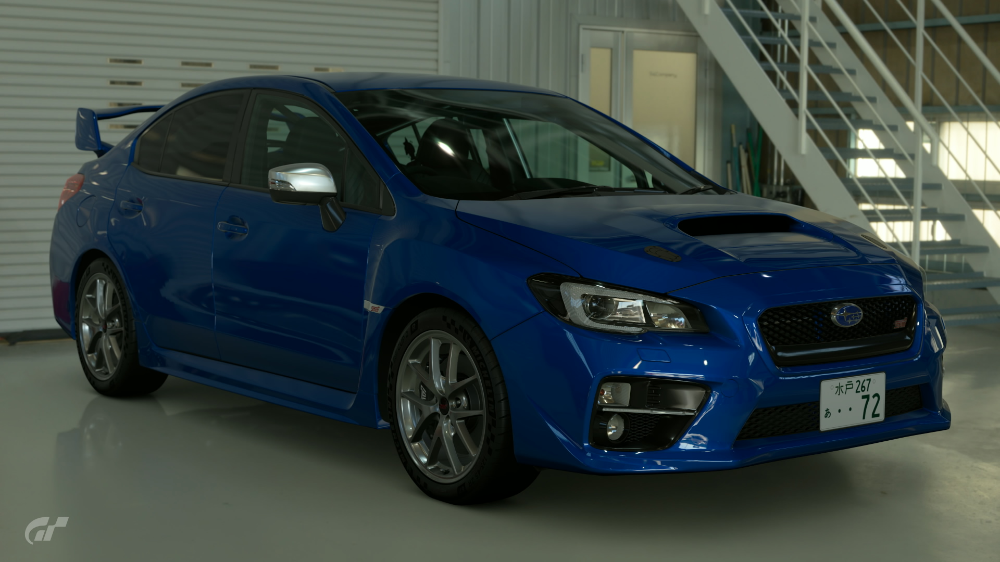

2014 Subaru Impreza WRX STi
The WRX STI is the latest in the long-running Impreza WRX line. Introduced in 2014, this model features a turbocharged variant of Subaru's legendary EJ20 sports engine. It also comes with an improved six-speed manual transmission. Like previous models, this one is all-wheel drive. The powerful engine paired with a resilient frame makes for a wonderful combination.
- Used (321.9 mi)
- Stock
- 6MT
- Saitama, Japan
- WR Blue Pearl
- 302hp
¥3,425,000